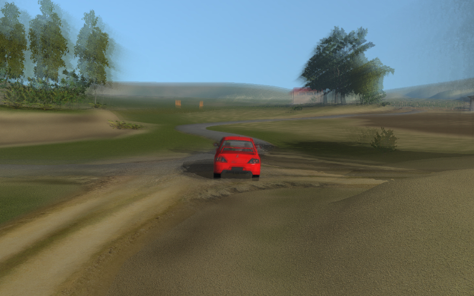
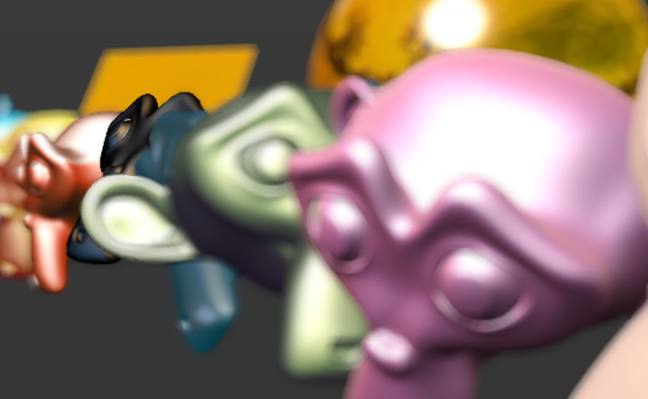
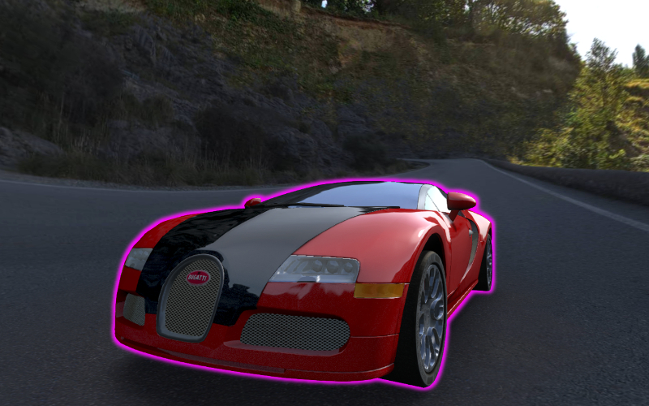
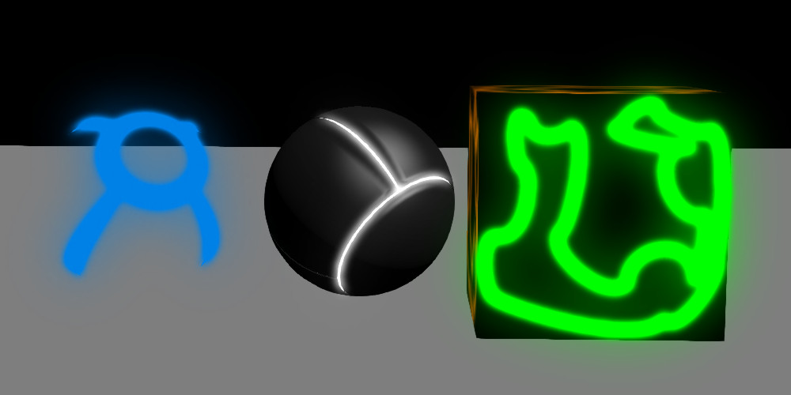

Postprocessing Effects¶
Table of Contents
Motion Blur¶
The motion blur effect can be used to improve the realism of an interactive scene. It is displayed as picture blurring when the camera or objects move.
{kind=link}
Activation¶
Activate the Motion Blur panel on the Render tab.
Additional settings¶
- Factor
- Effect appearance ratio. The higher this value is the stronger is the motion blur.
- Decay Threshold
- Blur fade-out ratio. The higher this value is the more distinct is the effect. The default value is 0.01.
Depth of Field¶
The depth of field effect (DOF) can be used to accentuate a part of a scene. It is displayed as picture blurring nearer and further from the camera focus.
{kind=link}
Activation¶
Select an active camera and go to its settings panel
Camera(Object Data).Then two options are available:
- Select an object to use as the camera’s focus in the
Focusoption of theDepth of Fieldpanel. In this case moving away or approaching this object will cause a corresponding correction of the camera focus. - Set a non-zero value for the
Distanceon the same panel (in Blender units = meters). In this case the camera focus will be located at this distance from the camera and will move together with it.
- Select an object to use as the camera’s focus in the
Additional Settings¶
{kind=link}
- Focus
- Sets the focal object. By default, this field is empty.
- Distance
- This parameter defines the focal distance. Available only if the
Focusparameter hasn’t been set beforehand (if the corresponding field is empty). Set to zero by default. - Front Start
This sets the distance (in meters) from the focus to the nearest plane (relative to the camera) behind which blurring effect starts to occur. The default value is 1.0.
This parameter is available only if the
High Quality (Bokeh)parameter is enabled.- Front End
- This sets the distance from the camera and the nearest plane (relative to the camera) behind which blurring effect reaches maximum strength (defined by the
Powervalue). Default value is 5.0. - Rear Start
This sets the distance from the focus to the furthest plane (relative to the camera) behind which blurring effect starts to occur. The default value is 1.0.
This parameter is available only if the
High Quality (Bokeh)parameter is enabled.- Rear End
- This sets the distance from the camera to the furthest plane (relative to the camera) behind which blurring reaches maximum strength (defined by the
Powervalue). Default value is 5.0. - Power
- Blurring ratio. The value of this parameter can vary from 0.1 to 10. The default value is 2.0.
- High Quality (Bokeh)
This enables high quality rendering of the depth of field effect. Activating this option:
- Enables bokeh effect and makes available the
Bokeh Intensityparameter for adjusting the strength of the effect. - Enables the
Front StartandRear Startparameters for setting soft transition between the distance from camera where the effect start to occur and the distance where it reaches its full strength. - Enables
Foreground Blurparameter that is described below.
The parameter is disabled by default.
- Enables bokeh effect and makes available the
- Bokeh Intensity
- This value sets the strength of the bokeh effect. It can vary from zero to 1.0. Set to 0.3 by default.
- Foreground Blur
- Enabling this option makes the engine to blur the silhouettes of the foreground objects, improving the quality of the effect at the cost of slight performance decrease. Disabled by default.
Screen-Space Ambient Occlusion¶
The screen-space ambient occlusion (SSAO) effect can be used to fake complex light reflections from objects. The basis of this effect is that the space between close objects is less accessible for diffused light and hence is darker.

Activation¶
Activate the Ambient Occlusion SSAO panel under the Render tab and set the Render Shadows parameter to AUTO or ON on the Render > Shadows panel.
Additional settings¶
- Radius Increase
- The spherical sampling radius multiply factor when transferring from the internal sampling ring to the external one. The default value is 3.0.
- Use Hemisphere
- Use a hemispherical sampling for shading instead of a spherical. Besides, it uses different shading law.
- Use Blur Depth Test
- Use edge-preserving blur to SSAO if flag will be turned on. Otherwise, it uses blur which averages a 4x4 rectangle around each pixel.
- Blur Depth Test Discard Value
- Influence of depth difference between samples on blur weight. It uses with
Use Blur Depth Testactivated flag. The default value is 1.0. - Influence
- SSAO appearance factor. The default value is 0.7.
- Distance Factor
- Factor of SSAO decay with distance. The default value is 0.0 (i.e. no decay).
- Samples
- Number of samples (the more samples there are the better is the quality but the poorer is the performance). The default value is 16.
God Rays¶
The god rays effect (aka crepuscular rays) simulates well-known natural phenomenon - the shining of illuminated air parts.

Activation¶
Activate the God Rays panel under the Render tab.
Additional settings¶
- Intensity
- The effect appearance factor. The default value is 0.7.
- Maximum Ray Length
- Rays length factor. Defines the step between samples of radial blurring. The default value is 1.0.
- Steps Per Pass
- Number of steps per single sample. The default value is 10.0.
Bloom¶
Bloom appears when a picture has elements with a very different brightness. A glowing halo is created around the bright details.

Activation¶
Activate the Bloom panel under the Render tab.
Additional settings¶
- Use Adaptive
- Use calculation of adaptive average luminance. Enabled by default.
- Intensity
- Bloom intensity. Set to 1.0 by default.
- Blur
- Bloom blurriness factor. Set to 4.0 by default.
- Edge Luminance
- The boundary value of an element’s relative brightness above which the bloom effect appears. Set to 1.0 by default.
Outlining¶
As a result of the outline glow effect, a luminous colored halo will be displayed around the object.
{kind=link}
Activation¶
The outlining is activated programmatically via API. Different animation models can be applied such as constant glow, fading out glow, pulsatory glow and any other. In order to enable the outlining effect on a certain object, make sure that the Render > Object Selection panel’s Enable property is set to ON or AUTO.
Additional settings¶
On the Object > Selection and Outlining panel:
- Enable Outlining
- Permit using the outline glow effect on this object.
- Duration
- Duration of glow animation, seconds. The default value is 1.
- Period
- Repeat period of glow animation, seconds. The default value is 1.
- Relapses
- The number of iterations of glow animation. If zero, animation is repeated forever. The default value is 0.
- Outline on Select
- Activate glow animation upon selecting the object. In this case the
Selectableoption must be enabled. In case of a user-defined glow animation model, this option must be disabled in order to avoid conflict.
On the Render > Object Outlining panel:
- Factor
- When this parameter decreases so does the thickness and the brightness of the halo around the object. The default value is 1.
The Render > Object Outlining settings are taken as default when the glow effect is initiated via API.
Glow¶
Effect of halo which is observed around emissive objects due to light scattering in the atmosphere and inside the human eye.
{kind=link}
Activation¶
Add a B4W_GLOW_OUTPUT node to a node material. The Enable Glow Materials option on the Render > Glow Materials panel should be set to ON or AUTO.
Additional settings¶
- Small Mask: Intensity
- Intensity of glow obtained through the smaller mask. The default value is 2.0.
- Small Mask: Width
- Width of glow obtained through the smaller mask. The default value is 2.0.
- Large Mask: Intensity
- Intensity of glow obtained through the larger mask. The default value is 2.0.
- Large Mask: Width
- Width of glow obtained through the larger mask. The default value is 6.0.
- Render Glow Over Transparent Objects
- Render the glow effect over transparent objects.
Anti-Aliasing¶
Anti-aliasing is used to reduce undesirable rendering artifacts (poor pixelization).

Activation¶
Select quality profile using AA Quality menu located on the Render > Anti-Aliasing panel.
- None - disable anti-aliasing,
- Low, Medium, High - enable anti-aliasing with the given quality profile.
Medium profile is used by default.
Additional settings¶
The anti-aliasing method is assigned simultaneously with the selection of the engine performance profile:
- low quality - no anti-aliasing,
- high quality and ultra quality - use the FXAA 3.11 algorithm (Fast Approximate Anti-Aliasing by Nvidia).